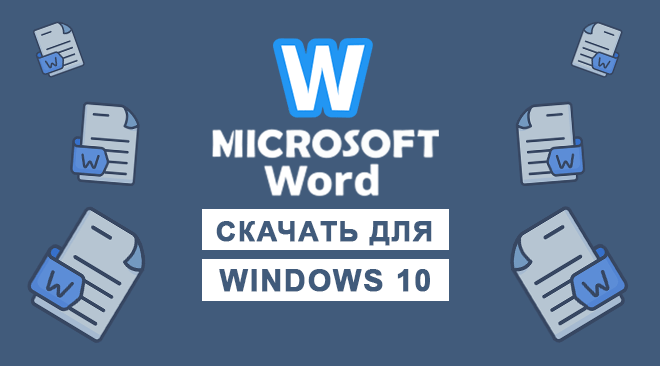
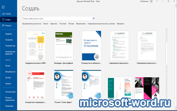
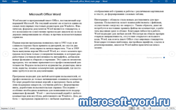
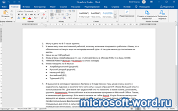

|  | Категория: | Текстовый редактор |
| Поддерживаемые ОС: | Windows 10 | |
| Разрядность: | 32 bit, 64 bit, x32, x64 | |
| Для устройств: | Компьютер | |
| Язык интерфейса: | На Русском | |
| Версия: | Бесплатно | |
| Разработчик: | Microsoft |
В данный момент установить Ворд для Windows 10 достаточно просто для новичка и профи. В состав пакета Microsoft Office, выпущенного корпорацией Microsoft, входит текстовый процессор Microsoft Word (также его называют просто Word, MS Word). Программа позволяет создавать, просматривать различные тексты (деловые бумаги, статьи, другие документы), с возможностью их редактирования, форматирования.
|  |  |  |
{kind=link}
{kind=link}
{kind=link}
Microsoft Word для Виндовс 10 на компьютер
В веб – страницы документы Ворд в Windows 10 могут преобразовываться без малейших трудностей. Это позволяет публиковать документы, информационные бюллетени, для ознакомления с ними другими пользователями. Возможность осуществлять перевод документов в реальном времени одним щелчком мышки, позволяет вести сотрудничество с пользователями со всего мира. Чтобы сделать свой документ более впечатляющим визуально, придать ему неординарный вид, существует возможность дополнять учебные задания, некоммерческие презентации, любые другие документы, трехмерными моделями.
Благодаря функции воспроизведения текста проверять, читать созданные текстовые документы можно без проблем. С ее помощью удается легко обнаружить ошибки. Найти нужный информационный источник, не покидая документ можно, воспользовавшись функцией поиска. Отображаться статьи будут в области задач, что позволяет читать их, не отвлекаясь от работы с текстом. Редактором Microsoft проверяется грамматика, орфография, поэтому можно не сомневаться в грамотности текстов, что позволяет сделать их идеальными без особого труда. Результаты проверки, проведенной с помощью Редактора с интеллектуальными подсказками, будут отображаться в Word на специальной панели.
Microsoft Word для версий windows:
Скачать Ворд для Windows 10 бесплатно
| Приложение | OS | Распаковщик | Формат | Версия | Торрент | Загрузка |
|---|---|---|---|---|---|---|
| Microsoft Word 2019 | Windows 10 | OpenBox | x32-x64 | Бесплатно (на русском) | ||
| Microsoft Word 2016 | Windows 10 | OpenBox | x64 | Бесплатно (на русском) | ||
| Microsoft Word 2013 | Windows 10 | OpenBox | x64 | Бесплатно (на русском) | ||
| Microsoft Word 2010 | Windows 10 | OpenBox | x64 | Бесплатно (на русском) | ||
| Microsoft Word 2007 | Windows 10 | OpenBox | x32-x64 | Бесплатно (на русском) | ||
| Внимание!! После установки Word 2019 активируйте его скачав активатор для Word 2019 распакуйте в любую папку и запустите от имени администратора start.cmd Пароль на архиве: 1234 |
||||||
Как установить Microsoft Word:
Запустите файл.
Ознакомьтесь с информацией и нажмите "Далее".
Нажмите "Далее", или снимите галочки с рекомендуемого ПО и нажмите "Далее". Если снять все галочки, рекомендуемое ПО не установится!
После всех шагов дождитесь предварительной загрузки.
За короткий период времени создавать документы профессионального уровня, можно при помощи шаблонов Word (они предназначаются для документов 40 разнообразных категорий). Кроме этого, используя шаблоны удается сэкономить время на создание документа. Доступна последняя версия Word при имеющейся подписке на Майкрософт 365. Ворд для Windows 10 отличается супер – компактной панелью инструментов, которая выглядит чисто, и приятно радует глаз. К нововведениям относится функция Office Insights, работающая через Bing. Это контекстный поиск различных определений в режиме чтения документа.
Программа рабочая, можно качать.
Качайте спокойно! Супер прога!
Удобно! Нашел то что было нужно.
Буду пробовать-10 ку.Пора уже
Спасибо за Ворд, щас его фиг найдешь
рекомендую
хороший сайт!
ясно и понятно